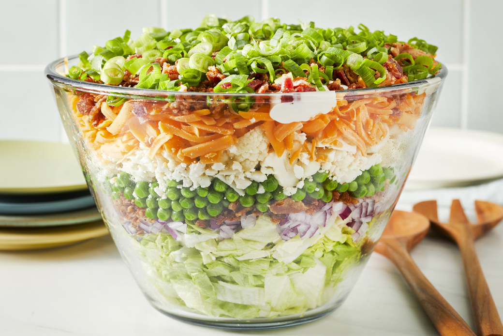

Seven Layer Salad Recipe

Description
Time to get healthy with this seven layer salad. Great for all ages. The
kids will surely love it too! Bacon, lettuce, onion, pea, cheese,
and cauliflower all in a large flat bowl.
Ingrediants
- 1 pound bacon
- 1 large head iceberg lettuce - rinsed, dried, and chopped
- 1 red onion, chopped
- 1 (10 ounce) package frozen green peas, thawed
- 10 ounces shredded Cheddar cheese
- 1 cup chopped cauliflower
- 1 1/4 cups mayonnaise
- 2 tablespoons white sugar
- 2/3 cup grated Parmesan cheese
Steps
- Place bacon in a large, deep skillet. Cook over medium high heat until evenly brown. Crumble and set aside.
- In a large flat bowl, place the chopped lettuce and top with a layer of onion, peas, shredded cheese, cauliflower and bacon.
- Prepare the dressing by whisking together the mayonnaise, sugar and Parmesan cheese. Drizzle over salad and refrigerate until chilled.